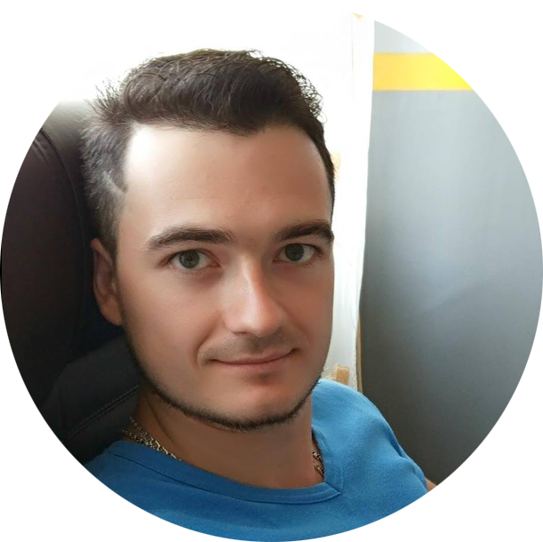

Меня зовут Дмитрий, на сегодняшний день я тренер по тхэквондо, 24 года я занимаюсь этим единоборством 15-й год тренирую.
В последнее время начал перегорать на своей работе, драйва не испытываю, решил искать что-то другое После долгих мук выбора площадки для обучения и профессии, очутился в Нетологии на профессии Python разработчик.
Прошел курс HTML, было интересно, но не захватывающе интересно. Верстка - не мое. С нетерпением ждал Python, между курсами много времени прошло.Я как-то стал забывать, что было на HTML и понял, что питоном произойдет то же самое. Поэтому как только появилась возможность стать аспирантом, я им стал. Так я оказался в аспирантуре.
Какая у тебя мотивация?
Если кто-то из вас работал тренером, он меня поймет :)
Три года назад у меня появилась дочь, и пока она не ходила в сад, мы с ней прекрасно общались, когда ребенок пошел в сад, я ее стал видеть только по утрам и вечером перед сном. Меня это не устраивает, хочу по вечерам общаться с семьей. Хочу нормальный рабочий график. Или уж если опять работать на себя, то видеть перспективы роста. В тренерстве я уперся в потолок.
Из последней мысли выходит следующая цель, я уже говорил, что перегораю на работе. Хочется сменить вид деятельности.
Какая у тебя мотивация?
Всю жизнь хотел переехать на запад, рассматривал раньше Россию, сейчас смотрю еще в сторону Германии. Тренерство - не тот вид деятельности, который позволяет переехать. Так как имея определенный образ жизни, сотню учеников, сложно все бросить и уехать. На построение базы в новом месте нужно время. С появлением программирования в моей жизни, переезд из забытой мечты стал актуальной целью.
Какие планы?
Планирую устроится на стажировку, закончить профессию, дополнительно пройти Python для продвинутых пользователей, и машинное обучение. Больше про свой учебный путь рассказал. Что касается аспирантуры, сложно сказать про свои планы, хочется быть полезным.

Алексей Стегура
Аспирант на курсе HTML, автор дополнительных задач на курсе «Основы программирования»